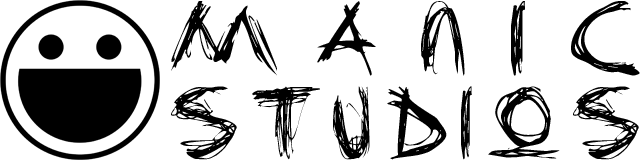

Home
/
Blog
This is Manic Studios, the label for all games created by
Manic
. The first game created under this label is
The 40 Year Old Game
, based on the podcast
The 40 Year Old Boy
by comedian Mike Schmidt.